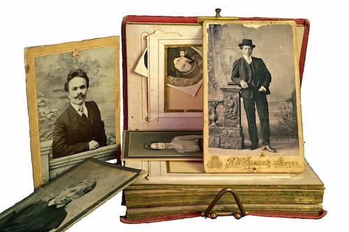

Our Genealogy Services
At Forebear Find, we offer a range of expert genealogy services to help you uncover and preserve your family’s history. Whether you’re tracing your roots or seeking citizenship, our personalized approach ensures every detail is brought to light.
Our Service Offerings
- Uncover birth, marriage, census, and immigration records with precision
- Trace African American, Italian, and Scots-Irish ancestry with specialized research
- Provide expert guidance through Italian dual citizenship applications
- Create detailed, narrative family histories from historical documents
How We Work
Our process begins with a consultation to understand your goals, followed by meticulous research using both traditional archives and modern digital tools. We deliver comprehensive reports and personalized narratives, ensuring your family’s story is accurate and engaging.
Sample Deliverables
From detailed family trees to beautifully crafted histories, our deliverables bring your ancestry to life—perfect for sharing with loved ones or supporting citizenship claims.
Get Started
Ready to explore your heritage? Contact us today for a free consultation and let’s begin your journey together.